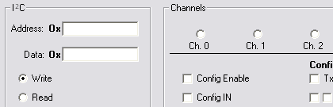
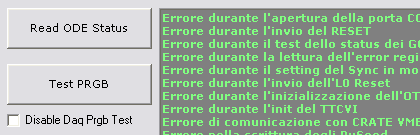
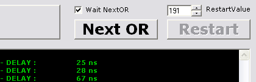

ATLAS Controller
Lead developer
ATLAS Controller is a stand-alone application used to control and test electronic boards developed for ATLAS experiment (CERN). It uses RS232 connections with a custom defined protocol to communicate directly with FPGA logics and controls high speed data connections with optical links.
Languages: C, Visual Basic • Read more about ATLAS experiment
ODE Tester
Lead developer
ODE Tester is meant to configure the electronic board for the muon L0 Off Detector used on the LHCb experiment.
Language: Visual Basic • Read more about LHCb experiment
IB Tester
Lead developer
IB Tester is used to test the Intermediate Boards (IB) using specification files and to build reports with barcodes to identify each IB inside the LHCb system.
Language: Visual Basic • Read more about LHCb experiment